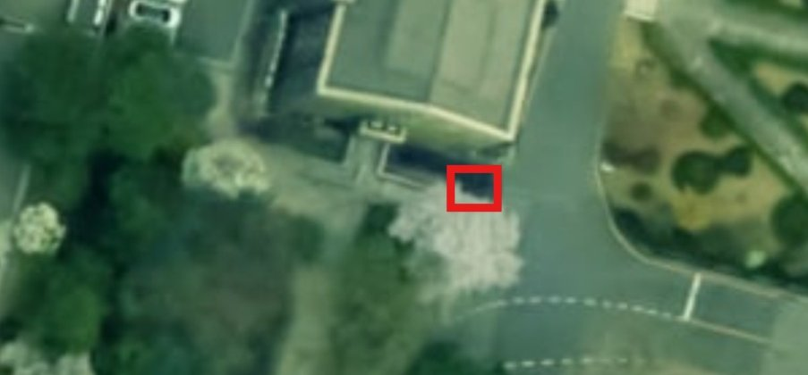

기체의 접지점(바퀴가 땅에 닿는 지점)을 지면 좌표로 바꾼 뒤, 그 발자국이 허용 구역과 얼마나 겹치는지로 판단합니다.
접지 발자국이 구역과 70% 이상 겹치고, 기체가 서 있는 상태.
겹침이 70% 미만. 경계선에 걸친 경우도 여기에 들어갑니다.
구역 안이어도 기체 축이 누우면 넘어진 것으로 보고 반납을 막습니다.
움직임이 멈췄는지 확인하는 중. 확정 판정이 아니라 기록에는 남지 않습니다.
상황을 하나씩 만들어 찍은 현장 영상입니다. 카드를 고르면 아래에서 재생됩니다.
야간 영상은 판정 로그가 없는 촬영분이라, 영상에서 뽑아낸 인식 결과만 구역 맵에 표시됩니다.
노란 테두리가 허용 주차 구역입니다. 작은 점은 그 순간 영상에서 인식된 기체 전부이고, 큰 점은 로그로 확정된 판정입니다(고리 = 구역과 겹친 비율).

빨간 사각형이 카메라가 내려다보는 반납구역입니다. 위성사진 네이버 지도 · 국토지리정보원.
시연 영상 7편에 잡힌 판정을 케이스별로 묶었습니다. 타일이나 행을 누르면 그 장면으로 이동합니다. 재시작 허가·불허가는 새 반납이 아니라, 녹화(관측)를 다시 시작할 때 이미 서 있던 기체가 다시 받은 판정 표시입니다. 겹침 분포는 전체 누적과 케이스별 탭으로 볼 수 있고, 전체 탭만 젯슨이 현장에서 남긴 확정 판정 전체 기준입니다.
| 시점 | 시각 | 트랙 | 브랜드 | 판정 | 겹침 | 지면좌표 |
|---|